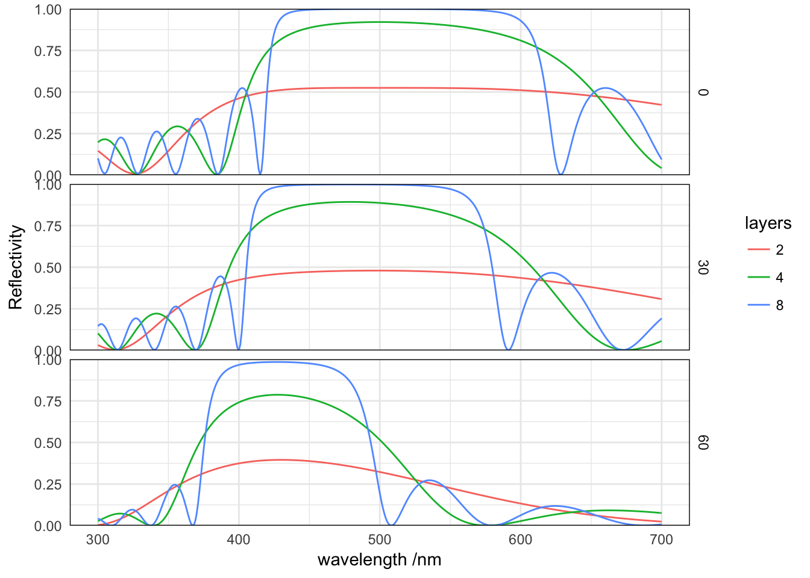

baptiste Auguié – 23 February, 2017
Reproducing Fig. 6.6, p. 188 of Mac Leod’s Thin Film Optical Filters. The structure is a stack of \(\lambda/4\) layers of alternating indices \(n_H\) (high) and \(n_L\) (low) on a glass substrate.
## Want to understand how all the pieces fit together? Buy the
## ggplot2 book: http://ggplot2.org/book/We first define a function that generates the structure (list) describing the multilayer stack, and pass it to the function that calculates the optical response.
library(planar)
make_stack <- function(n = 3, wavelength=seq(300, 700),
lambda0 = 500, thickness = lambda0/4,
nH=2.3, nL=1.38, nS=1.52,
angle=0){
epsilon.list <- as.list(c(1, rep(c(nL, nH)^2, n), nS))
thickness.list <- c(0, rep(thickness/c(nL, nH), n), 0)
res <- recursive_fresnelcpp(wavelength=wavelength, angle=angle,
epsilon=epsilon.list, thickness=thickness.list,
polarisation='p')
data.frame(res[c("wavelength","k0", "R")])
}With this function, we can simulate the optical response for a number of parameters using the convenient syntax of the plyr package (equivalent to for loops over sets of parameters). Here we compare stacks with increasing number of layers, and various incident angles.
require(plyr)
params <- expand.grid(n=c(2, 4, 8), angle=seq(0,pi/3, by=pi/6))
all <- mdply(params, make_stack)
all$angle.d <- 180/pi*all$angle
library(ggplot2)
ggplot(all)+ facet_grid(angle.d ~ .)+
geom_line(aes(2*pi/k0, R, colour=factor(n))) +
labs(colour="layers") +
scale_x_continuous("wavelength /nm")+
scale_y_continuous("Reflectivity", expand=c(0,0), lim=c(0,1))
With increasing number of layers, the reflectivity stop-band becomes stronger, with a more rectangular transfer function. Side-bands also develop accordingly, however, with higher and higher frequency. The position of the stopband shifts with incident angle, as the projection of the k-vector determines the resonance condition.